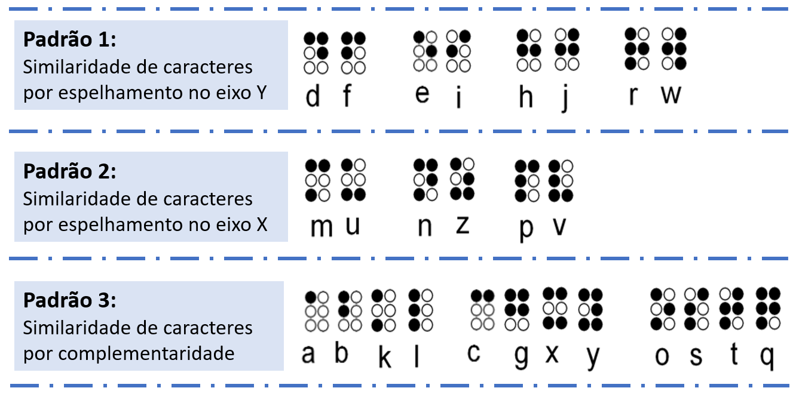

Iniciando a partir desta compreensão e objetivando auxiliar professores videntes no aprendizado da linguagem Braille, de forma mais rápida e de uma perspectiva mais fácil, visto que a leitura é feita de forma visual, esta plataforma traz uma proposta de aprendizagem baseada em padrões de similaridade dos caracteres Braille, conforme mostrado na Figura 2.
Figura 2: Alfabeto Braille organizado por padrão
Assim, organizou-se as combinações das letras com base na semelhança visual dos caracteres Braille, em três níveis de instrução, conforme os padrões definidos e apresentados na Figura 2. No nível 1, os arranjos de caracteres envolvem a apresentação do conjunto de amostra do 1º padrão composto por oito letras organizadas em 4 pares; no nível 2 é apresentado o 2º padrão formado por 3 pares de letras; o nível 3 envolve o 3º padrão que é composto por três conjuntos de 4 letras cada, totalizando 12 letras.
No 1º padrão, têm-se as letras 𝑒𝑖 ,𝑑𝑓 ,ℎ𝑗 ,𝑟𝑤 que são os caracteres Braille organizados por possuírem similaridade de espelhamento no eixo 𝑦 . Ou seja, uma reflexão no eixo 𝑦 . O 2º padrão estão as letras 𝑚𝑢 , 𝑛𝑧 e 𝑝𝑣 , que também são organizadas por similaridade, mas com reflexão no eixo 𝑥 . Os caracteres do 3º padrão, denominados de complementaridade, estão organizados em 3 grupos de 4 letras, 𝑎𝑏𝑘𝑙 , 𝑐𝑔𝑥𝑦 e 𝑜𝑠𝑡𝑞 , seguindo um padrão sequencial de preenchimento da cela Braille para esses conjuntos de caracteres, em que cada caractere complementa e ajuda a lembrar do próximo.
Desta forma, o arranjo 𝑎𝑏𝑘𝑙 é formado pela combinação dos pontos da primeira coluna vertical da cela Braille, que são os pontos 1, 12, 13 e 123, respectivamente. Já o arranjo 𝑐𝑔𝑥𝑦 é formado pelo preenchimento dos pontos da linha 1, linhas 1 e 2, linhas 1 e 3 e linhas 1, 2 e 3, sendo formado pelas combinações dos pontos 14, 1245, 1346 e 13456, respectivamente. Por fim, o arranjo do terceiro conjunto, 𝑜𝑠𝑡𝑞 , é formado pelos pontos 135, 234, 2345 e 12345, respectivamente.